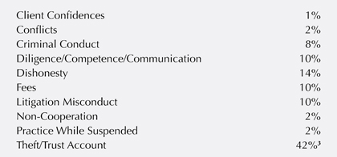
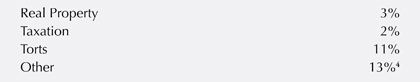

51
5
The Discipline Process and Jurisdiction for Discipline
Key Concepts

• A lawyer has a duty to be truthful in the context of a disciplinary matter.
• Any jurisdiction that has admitted a lawyer to the practice of law has authority to discipline that lawyer regardless of where the conduct occurs.
• Any jurisdiction in which a lawyer renders legal services has authority to discipline that lawyer.
• A lawyer may practice law temporarily if the lawyer seeks the appropriate approval.
• If one state disciplines a lawyer, other states in which the lawyer is admitted may impose reciprocal discipline.
Introduction

You may think it is strange to begin talking about lawyer discipline when you are still a law student, but understanding who has the power to discipline you when you are a lawyer and the breadth of that power is very important. Indeed, law students can be disciplined by the bar if they obtain a law student practice license during law school.1
The most prevalent types of misconduct that lead to attorneys being sanctioned included “general neglect, failure to communicate, failure to file, failure to cooperate with a disciplinary agency, record-keeping violations, general misrepresentation, 52failure to protect the interest of a client, commingling, conversion, commission of felonies, and failure to appear.”2
Consider a report from the State of Washington that publicly documented lawyer discipline in that state in 2012. The most common ethical violation in 2012 was theft involving trust accounts, which accounted for 42% of the violations. The second most common ethical violation was for dishonesty. The remaining topics involving lawyer discipline were as follows:
3
Washington State also recorded the practice areas of the attorneys who were disciplined. Which area of law was most prone to discipline? In Washington State, the attorneys who practiced in family law were subject to discipline more often than other areas. Consider the statistics:

53
4
As we saw in the previous chapter, the highest court in each state regulates the practice of law within that state. In addition, the highest court in each state is also the arbiter of discipline within the state. Typically, the court delegates the operation of the day-to-day discipline system to a lesser entity, such as a Board of Professional Responsibility. This entity may or may not be a part of the state bar association.5 This Board of Professional Responsibility investigates the complaints filed against lawyers. If the Board concludes that a complaint has merit, it presents the matter to a tribunal—often members of the court—for a determination of whether probable cause exists to charge the lawyer with professional misconduct. If the lawyer is charged, the lawyer has the opportunity to defend the charge. A hearing body made up of lawyers, and sometimes non-lawyers, hears the matter and reaches a decision on guilt and the appropriate discipline. The state’s highest court usually has the right to review findings and conclusions of the hearing body. The court can decline to adopt the hearing body’s decision on guilt or the court can fully adopt the hearing body’s decision.
So, what happens if a lawyer is disciplined? In other words, what does lawyer “discipline” mean? “Discipline” refers to the penalties imposed by a disciplining authority on an attorney who has breached a rule or statute for which discipline can be imposed. There are three types of discipline: disbarment, suspension, and reprimand.
The least restrictive form of discipline is the reprimand, or censure, which does not prevent the attorney from practicing law. A private reprimand is an unpublished, private communication in writing from the board of professional responsibility to the attorney. A public reprimand is published, usually in bar magazines or other publications aimed at other attorneys. It actually names the attorney involved, states the facts regarding the improper conduct, and states the warning given to the attorney.
Suspension is more stringent because the attorney is prohibited from practicing law for a specific amount of time chosen by the disciplinary authority. The typical time for a suspension is from several months to several years. Suspension may 54include the requirement that the attorney take the bar examination again or at least the ethical component of the bar exam before being readmitted to active practice.6
The most serious type of discipline is disbarment. Although disbarment typically means permanent removal from the practice of law, in some states a disbarred attorney may subsequently petition for readmission. Sometimes the petitioning attorney must retake the regular bar exam and an ethics exam to be readmitted.
A typical scenario goes something like this. Unhappy Client files a complaint with the Board of Professional Responsibility against Lucy Lawyer, claiming that Lucy kept money from Client and also did a bad job on her case. The theft of the money could be a criminal act and a violation of the applicable rules of professional conduct. Assume that in Lucy’s state, the Board of Professional Responsibility is a part of the state bar association. The Board of Professional Responsibility investigates the complaint and determines that there is sufficient evidence to present the matter to a formal Professional Responsibility Committee. The Professional Responsibility Committee is a group of three lawyers and a non-lawyer; it determines that there is probable cause that Lucy violated the rules of professional conduct. After a time for discovery and the filing of briefs, the Committee presents the matter back to the Board of Professional Responsibility and Lucy has an opportunity to defend herself. Assume the Board finds that Lucy has violated the rules of professional conduct and should be disbarred. The Supreme Court has a choice: it can accept the Board’s recommendation, or it can overrule the Committee if it decides the Committee incorrectly decided that Lucy violated the rules. The Court could decide that Lucy violated the rules and that she should be suspended from the practice of law for two years. Or the Supreme Court could affirm the Board in all respects.
The Rule
The main rule that governs lawyer discipline is Rule 8.5.7 Rule 8.5 governs the disciplinary authority of courts over lawyers and addresses the situation where a lawyer commits a violation in one state but is admitted to practice in another state. 55Rule 8.5 states the long-recognized principle that a state that has admitted a lawyer to practice in that jurisdiction has the authority to discipline that lawyer regardless of where the problematic conduct occurs.
Rule 8.5 also provides the authority for disciplining a lawyer. In part (a), the rule provides that a lawyer admitted to practice in a jurisdiction is subject to the disciplinary authority of that jurisdiction—regardless of where the conduct occurred. Part (b) determines which law will apply to a lawyer’s conduct. Part (b)(1) states that for conduct in connection with a matter before a court, the court can apply the law of its jurisdiction—unless the court determines otherwise. If a lawyer’s conduct occurs in another jurisdiction, then the court can choose whether to apply the law of the other jurisdiction (where the conduct occurred) or its own law.
Part (b)(2) provides a safe harbor for the lawyer: what if the rules of the various jurisdictions conflict? For example, one state may allow disclosure of confidential information in a particular circumstance while another state may not allow that disclosure. The lawyer must then decide which jurisdiction’s standards to follow. Part (b)(2) provides that a lawyer cannot be disciplined even if the lawyer’s conduct violates the standards of the jurisdiction whose law ultimately applies if the lawyer’s actions are in accord with the standards of the jurisdiction in which the lawyer “reasonably believed” the conduct would have “predominant effect.”
Disciplinary Authority; Choice of Law
(a) Disciplinary Authority. A lawyer admitted to practice in this jurisdiction is subject to the disciplinary authority of this jurisdiction, regardless of where the lawyer’s conduct occurs. A lawyer not admitted in this jurisdiction is also subject to the disciplinary authority of this jurisdiction if the lawyer provides or offers to provide any legal services in this jurisdiction. A lawyer may be subject to the disciplinary authority of both this jurisdiction and another jurisdiction for the same conduct.
56
1. The Lawyer’s State of Admission
In the vast majority of situations, a lawyer who engages in improper conduct does so in a state in which the lawyer is admitted. Then there is no question of which law to apply. The rules of the state of admission clearly apply.
However, lawyers can be formally admitted to practice in more than one jurisdiction. A lawyer who has clients in several states may be admitted to the bar in each state. So, for example, let’s assume that Lawyer has clients in State V and State M. Further, Lawyer is licensed to practice law in both states. In State V, Lawyer must abide by all the rules and requirements of State V. Likewise, in State M, Lawyer must abide by all the rules and requirements of State M. Lawyer must pay dues to each state and fulfill the continuing legal education requirements for each state.
Thus, Lucy, a lawyer admitted in States M and V, is subject to discipline by both State M and V if her conduct violates the rules of those jurisdictions. Since each state has granted Lucy a license to practice within that state, each state can take that entitlement away on the basis of Lucy’s failure to abide by the standards of lawyer conduct in effect in that jurisdiction. If Lucy commits an act of deceit in State C in violation of rules in both State V and M, both jurisdictions have the authority to discipline Lucy.

Example. Lawyer Joe is licensed to practice law in Michigan. Recently, Joe applied for a law license in Indiana but Joe lied on his application to the bar in Indiana when they asked him about any prior convictions. Can Michigan discipline Joe for Joe’s failure to be truthful on the Indiana bar application?
Analysis. Yes, Michigan may discipline Joe, even though his unprofessional act technically occurred in Indiana. The state in which Joe is licensed, Michigan, can discipline Joe even if the act occurred in a different state as long as that act was improper under the Michigan Rules of Professional Conduct.
2. The State in Which the Lawyer Offers or Provides Legal Services
The second part of 8.5(a) provides that any jurisdiction in which a lawyer provides legal services may discipline the lawyer for a violation of its rules.
57
Disciplinary Authority; Choice of Law
(a) …
… A lawyer not admitted in this jurisdiction is also subject to the disciplinary authority of this jurisdiction if the lawyer provides or offers to provide any legal services in this jurisdiction. A lawyer may be subject to the disciplinary authority of both this jurisdiction and another jurisdiction for the same conduct.
In certain situations, a lawyer may practice in jurisdictions other than those in which he or she is admitted. For example, a lawyer may practice law in a state in which the lawyer is not admitted if the activity is on a temporary basis and relates to a proceeding in an admitted jurisdiction. Likewise, a court may admit a lawyer pro hac vice in a case in a state in which the lawyer is not otherwise admitted.8
Rule 8.5 provides that any jurisdiction in which a lawyer provides legal services or offers to provide legal services may discipline the lawyer for a violation of its rules. So if Lawyer is admitted to the bars of State V and M and commits an act of fraud in State C, State C has the authority to discipline Lawyer if Lawyer provides legal services in State C. It is unlikely that State C would exercise that jurisdiction when the improper conduct does not relate to the legal services rendered or offered in State C, however. State C, after all, is most concerned with protecting its own residents. The end result is that Lawyer is subject to the discipline authority of all three jurisdictions.
Note that Rule 8.5(a) is quite expansive. Rule 8.5 (a) grants a state authority to discipline lawyers on the basis of offers or advertisements of the lawyer’s legal services. Therefore, it is extremely important that a lawyer know where her advertisements are being viewed or heard. If Lawyer is licensed in State B, but the advertisements of Lawyer’s services are being viewed in State C, then Lawyer could be disciplined by State C (if the advertisement violates the advertising rules in State C). State C would ask the following question: Could a reasonable person viewing Lawyer’s advertisement in State C believe that the advertisement offers legal services in State C? If the answer is yes, then Lawyer could be disciplined by State C if she violates State C’s standards of conduct or rules on lawyer advertising.9
58
3. Reciprocal Discipline
This subsection also brings up the concept of reciprocal discipline. If one state disciplines a lawyer, other states may issue reciprocal discipline. If State V disciplines Lucy, a lawyer admitted in States V and M, M may give effect to the State V disciplinary action and discipline Lucy as well. So disbarment by State V can result in disbarment in State M too, although State M is not required to impose the same discipline or any discipline at all. Some states require admitted lawyers to notify the state discipline authority of any discipline imposed by another state. The A.B.A. also has a National Lawyer Regulatory Data Bank that records discipline actions in all states that report to it.
Example. Billy Lawyer wanted to get out of representing Terrible Client in a criminal defense case in Maryland. Billy is a criminal defense lawyer in both Maryland and Virginia. Terrible Client was problematic from the first meeting. After several meetings with Terrible, Billy felt that he could not continue representation. In the hearing to withdraw as defense counsel for his client, Billy disclosed some confidential information about the case to the court. Billy stated, “I really don’t want to represent Terrible Client because I think he did it; the bodies are buried in the woods!” This conduct violated Rule 1.6 of Maryland’s professional conduct rules and Billy was found to have violated Rule 1.6 by the Maryland Board of Professional Responsibility. The Virginia Board of Professional Responsibility also found out about Billy’s actions and subsequently brought charges against Billy for violating Rule 1.6, Confidentiality. Can Virginia discipline Billy even though the alleged violation occurred in Maryland and not Virginia?10
Analysis. Yes. Billy Lawyer can be disciplined in Virginia for an act he committed in Maryland. Under Rule 8.5(a), “[a] lawyer admitted to practice in this jurisdiction is subject to the disciplinary authority of this jurisdiction, regardless of where the lawyer’s conduct occurs.” Under Rule 8.5(b)(1), which governs choice of law, when the conduct giving rise to a disciplinary action is connected with a court proceeding, “the [disciplinary] rules to be applied [in this jurisdiction] shall be the rules of the jurisdiction in which the court sits, unless the rules of the court provide otherwise[.]” Thus, the State 59of Virginia can impose a sanction upon a member of its own bar for violation of a Maryland rule.
4. Choice of Law
Rule 8.5(b) deals with the law a court applies to a given situation in which the lawyer acts improperly. In the vast majority of situations, a lawyer who engages in improper conduct does so in a state in which the lawyer is admitted. Then there is no question of which law to apply. The rules of the state of admission clearly apply.
When only one state is involved, the court will apply the rules of professional conduct of that state, which is also the state in which the lawyer is admitted. But what happens if more than one state is involved? The answer becomes a bit more complex. In this situation, the state that is imposing discipline must determine which jurisdiction’s rules to apply. Rule 8.5(b) provides a court with guidance as to the proper choice of law.
Disciplinary Authority; Choice of Law
(a) …
(b) Choice of Law. In any exercise of the disciplinary authority of this jurisdiction, the rules of professional conduct to be applied shall be as follows:
(1) for conduct in connection with a matter pending before a tribunal, the rules of the jurisdiction in which the tribunal sits, unless the rules of the tribunal provide otherwise; and for any other conduct, the rules of the jurisdiction in which the lawyer’s conduct occurred, or, if the predominant effect of the conduct is in a different jurisdiction, the rules of that jurisdiction shall be applied to the conduct.
Rule 8.5(b) can be interpreted as follows. First, if the problematic conduct relates to a matter before a tribunal, the professional conduct rules of the jurisdiction in which the tribunal sits apply unless that set of rules says otherwise. If Lucy, a Virginia lawyer, appears pro hac vice in a court in Oregon and engages in improper conduct, any discipline should be measured against the ethics rules in effect in 60Oregon. Virginia may be the state disciplining Lucy, but her conduct is measured by Oregon standards.
Second, in any other situation, the disciplining jurisdiction would apply the law of the jurisdiction in which the problematic conduct occurred unless the “predominant effect” of the conduct is in another jurisdiction. Assume that Lucy, a lawyer admitted in Virginia and Maryland, commits an act of deceit in relation to the provision of legal services in California. Regardless of which state seeks to discipline her, the rules of California should apply unless the “predominant effect” of Lucy’s deceit is in a jurisdiction other than California.
Example. A law professor worked to help several defense firms over a four-year period defend a large tobacco suit against tobacco manufacturers. After the suit was completed, the professor sought to enforce an oral fee-splitting agreement between them such that he would receive a portion of the lawyers’ fees for his work. The defense lawyers and their firms defended by stating that fee splitting agreements violated professional conduct rules in several of the states where the lawyers were practicing. How should the court analyze the validity of the fee splitting agreement? In other words, which state’s professional conduct rule should apply?
Analysis. Under a Rule 8.5(b) analysis, the court found that because the fee-splitting agreement was made in Illinois—a state that allowed fee splitting agreements—the court could use the law of Illinois concerning the rules of professional conduct. Under the Illinois rules, the professor could recover some portion of the fees. The court did, however, engage in a complex choice-of-law analysis to determine which state law applied, and concluded that the state’s law where the conduct occurred should be the state law of application.11
5. Safe Harbor
Rule 8.5(b) also provides a safe harbor for a lawyer. Choice of law decisions are always made in hindsight. A lawyer, at the time of taking action and providing legal services, may not know definitively which set of rules apply to that conduct. Occasionally, the rules of the various jurisdictions conflict. The safe harbor provides a circumstance in which the lawyer cannot be disciplined even if the lawyer’s conduct violates the standards of the jurisdiction whose law ultimately applies. If 61the lawyer’s actions are in accord with the standards of the jurisdiction in which the lawyer “reasonably believes” the conduct will have “predominant effect,” the lawyer should be free from discipline.
Disciplinary Authority; Choice of Law
(a) …
(b) Choice of Law. In any exercise of the disciplinary authority of this jurisdiction, the rules of professional conduct to be applied shall be as follows:
(1) …
… A lawyer shall not be subject to discipline if the lawyer’s conduct conforms to the rules of a jurisdiction in which the lawyer reasonably believes the predominant effect of the lawyer’s conduct will occur.
Rule 8.5 provides a safe harbor for a lawyer. Suppose a lawyer at the time of making a decision to provide legal services does not know which set of rules apply to his conduct. Sometimes, the rules of various jurisdictions can differ. Consider the following example.
Example. You are a lawyer based in New York with expertise in corporate acquisitions. You are assisting a Texas attorney representing Y, a Texasbased company, which wants to sell assets to Z, another Texas-based company. Company X learns of your expertise in acquisitions and wants to hire you to help it purchase some of Y’s subsidiaries in Texas. Neither X nor Y has New York assets, and none of the information that you have learned through your ongoing representation of Y is relevant to the acquisition contemplated by X. Can you accept X as a client?
Analysis. The answer depends on which state’s ethics rules apply to the conduct. Under New York’s conflict-of-interest rules, you are prohibited from accepting the representation of X unless you get informed consent from X and Y, because it would require you to represent interests adverse to those of a current client. The conflict-of-interest rules in Texas, however, would 62allow the representation as long as there is no significant risk that the clients’ confidences will be used against them and the matters are not substantially related. In order to determine which conflict-of-interest rules apply, you would need to look at each state’s ethics rule on choice of law. Under New York’s choice of law rule, New York’s conflict-of-interest rule would apply to the representation and would prevent you from representing X, unless you were licensed to practice in New York and Texas. But under Rule 8.5, you would be able to accept X as a client, because the Texas conflict-of-interest rule would apply to the representation. Because it can be difficult to make a choice of law determination at the beginning of a representation, Rule 8.5 includes a “safe harbor” provision that protects lawyers in this situation who have behaved reasonably in the face of uncertainty. Commentators look upon Rule 8.5 favorably because it achieves an appropriate balance between state regulatory interests and clients’ freedom to choose their counsel. Uniformity in choice of law for ethics rules will reduce the amount of uncertainty confronted by lawyers engaging in multijurisdictional practice and the safe harbor can provide protection for lawyers who behave reasonably in the face of inevitable uncertainty. Arguably, this will increase lawyers’ willingness to engage in multijurisdictional practice, increasing the number of lawyers from whom clients choose their counsel.12
The above safe harbor language provides that a lawyer cannot be disciplined even if the lawyer’s conduct violates the standards of the jurisdiction whose law ultimately applies. If the lawyer’s actions are in accord with the standards of the jurisdiction in which the lawyer “reasonably believed” the conduct would have the “predominant effect,” the lawyer will be free from discipline. This provision means that if Lucy provides legal services in California and “reasonably believes” that her conduct will have “predominant effect” in California, Lucy cannot be disciplined for violating Virginia’s standards if a discipline authority later determines that Virginia law actually applies. This is true, however, only if Lucy acted in accord with California standards.
63
Quick Summary

Rule 8.5 governs how a lawyer can be disciplined. Any jurisdiction that has admitted a lawyer to the practice of law has authority to discipline that lawyer regardless of where the conduct occurs. Any jurisdiction in which a lawyer renders legal services or offers to render legal services has authority to discipline that lawyer. If one state disciplines a lawyer, other states in which the lawyer is admitted may impose reciprocal discipline. If a lawyer is being disciplined for conduct relating to a matter before a tribunal, the standards of the jurisdiction of the tribunal must be applied to the lawyer’s conduct unless the law of that jurisdiction directs otherwise. If a lawyer is being disciplined for conduct not related to a matter before a tribunal, the standards of the jurisdiction in which the conduct occurred applies unless the “predominant effect” of the conduct is elsewhere. However, if a lawyer “reasonably believes” that the lawyer’s conduct will have “predominant effect” in one jurisdiction and the lawyer’s conduct conforms to the standards of that jurisdiction, the lawyer is not subject to discipline if a discipline authority later determines that another jurisdiction’s rules apply and have been violated.
Test Your Knowledge

To assess your understanding of the material in this chapter, click here to take a quiz.
1 See e.g., WA APR 28(d)(8).
2 Stephen G. Bene, Why Not Fine Attorneys?: An Economic Approach to Lawyer Disciplinary Sanctions, 43 Stan. L. REV. 907, 909–10 (1991)(citing American Bar Association Center for Professional Responsibility, Statistical Report Re: Factual Information on Public Discipline Imposed Against Lawyers by State Jurisdictions During 1983, Chart III (Sept. 1984) [hereinafter A.B.A. Statistical Report]).
3 Id. at 24.
4 Id.
5 Most U.S. states have a unified (mandatory) bar association to which all attorneys must belong in order to practice in that state. Some states have voluntary bar associations to which attorney may belong, but they do not have to be a member of the bar in that state in order to practice in the state.
6 A former Ohio lawyer, dubbed the “naked photographer” by the news media, actually won reinstatement of his law license, subject to some conditions. Stephen P. Linnen, formerly legal counsel to the speaker of the Ohio House, was suspended in 2006, two years after he pleaded guilty to 53 misdemeanors. Prosecutors had alleged he approached 38 women while wearing only athletic shoes and a stocking cap, then photographed their surprised reaction. The incidents occurred in 2002 and 2003. At his hearing to regain his law license, three mental-health professionals testified that he was rehabilitated and had a low chance of relapse. For the next three years, Linnen had to participate in the Ohio Lawyers Assistance Program and serve a monitored probation period, but he did get his license reinstated. See http://www.abajournal.com/news/article/naked_photographer_wins_reinstatement_of_his_law_license (last visited on March 20, 2014).
7 DLRPC Rule 8.5.
8 See Chapter 4, The Unauthorized Practice of Law.
9 See Chapter 9, Communications about Lawyer Services.
10 This hypothetical was based upon In re Billy L. Ponds, Respondent. A Member of the Bar of the District of Columbia Court of Appeals (Bar Registration No. 379883).
11 See Samantha Syverson, Model Rule 8.5 and the Safe Harbor Provision: Balancing Client Choice and State Regulatory Interest, 24 GEO. J. LEGAL ETHICS 955 (2011).
12 Id. at 955–56.